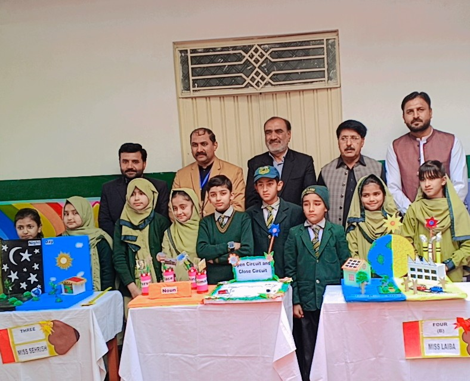
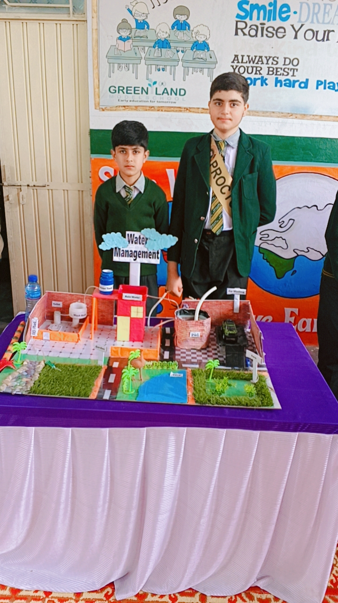
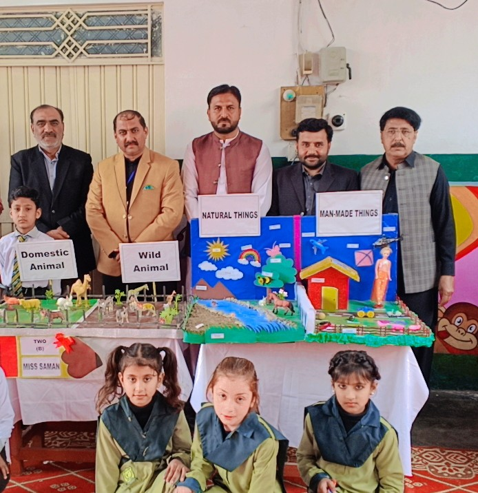
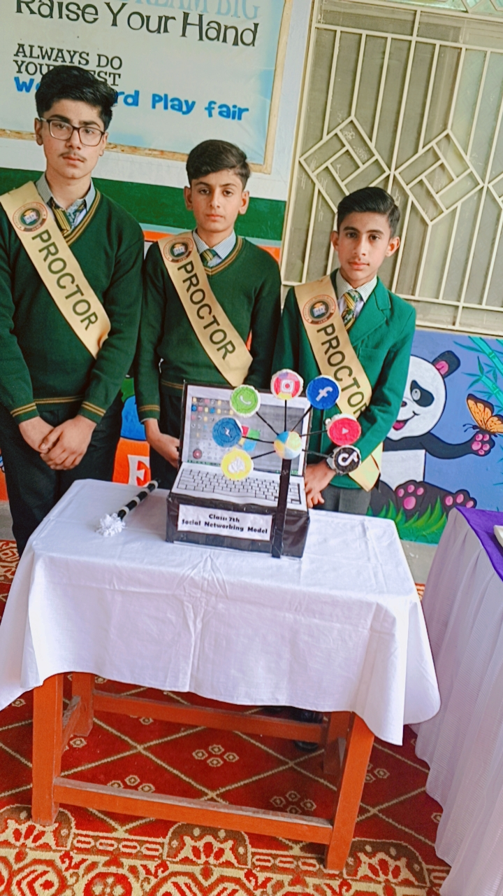

GREEN LAND MODEL SCHOOL · JAND
An education that lasts beyond the exam.
A welcoming school where children build knowledge, confidence and character—one discovery at a time.
Haji Bazar Chowk · Tehsil Road, Jand
WHAT DEFINES US
Four commitments we hold to, year after year.
Every child deserves a strong start, thoughtful guidance and room to discover what they can become.
Strong foundations
We help students build knowledge and skills step by step, from their first classroom years onward.
Confidence to grow
A welcoming environment gives children space to ask questions, share ideas and take part.
Character every day
Respect, responsibility and care for others belong in every part of school life.
Learning by doing
Projects and shared activities help students connect classroom learning to the world around them.

Curiosity starts with a good question.ACADEMICS
Learning grows when curiosity gets room.
From early years through Grade 10, students learn in a supportive setting that values knowledge, confidence and character. Graduate classes are also available.
- 01 Playgroup and pre-primary
- 02 Primary and middle school
- 03 Senior and Graduate classes
CAMPUS LIFE
A school day with room in it.
Alongside their lessons, students have opportunities to create, present and learn together. School projects give children a chance to turn ideas into something they can share.
Come meet us
Learning together, one idea at a time.
OUR SCHOOL, OUR PROMISE
“A place to learn, grow and lead.”
We aim to provide quality education in a safe and supportive environment, helping students grow in knowledge, confidence and character.
Green Land Model School JandADMISSIONS
Begin a conversation about your child’s next chapter.
Tell us a little about your child. Our school team can help you with the next steps.
Start your applicationCOME MEET US
Visit Green Land in Jand.
Haji Bazar Chowk, Tehsil Road, Jand